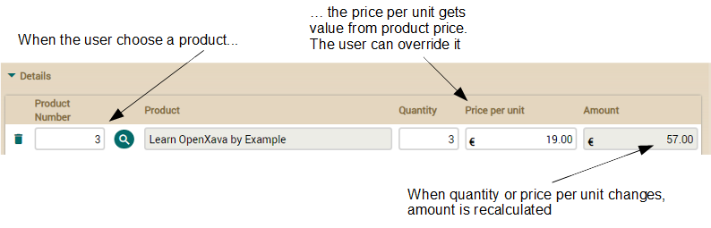

If you don't like videos follow
the instructions below.
Using @DefaultValueCalculator
The way we calculated the amount for the detail line is not the best approach. There are at least two drawbacks to it. Firstly, the user may want to have the option to overwrite the unit price. Secondly, if the price of the product changes the amounts for all your invoices changes too, this is not good.To avoid these drawbacks it's better to store the price of the product for each detail. Let's add a pricePerUnit persistent property to the Detail class and let's calculate its value from the price in Product using a @DefaultValueCalculator. Just to obtain the effect you can see:

The logic to calculate the initial value will be in PricePerUnitCalculator. It simply reads the price from the product. See the next code for this calculator:
package com.yourcompany.invoicing.calculators; // In 'calculators' package
import org.openxava.calculators.*;
import com.yourcompany.invoicing.model.*;
import lombok.*;
import static org.openxava.jpa.XPersistence.*; // For using getManager()
public class PricePerUnitCalculator implements ICalculator {
@Getter @Setter
int productNumber; // Contains the product number when calculate() is called
public Object calculate() throws Exception {
Product product = getManager() // getManager() from XPersistence
.find(Product.class, productNumber); // Find the product
return product.getPrice(); // Returns its price
}
}
Then we add the property pricePerUnit.
Add the next code to your Detail class:
@DefaultValueCalculator(
value=PricePerUnitCalculator.class, // This class calculates the initial value
properties=@PropertyValue(
name="productNumber", // The productNumber property of the calculator...
from="product.number") // ...is filled from product.number of the detail
)
@Stereotype("MONEY")
BigDecimal pricePerUnit; // A regular persistent property
This means that you have to adapt your amount calculated property:
@Stereotype("MONEY")
@Depends("pricePerUnit, quantity") // pricePerUnit instead of product.number
public BigDecimal getAmount() {
if (pricePerUnit == null) return BigDecimal.ZERO; // pricePerUnit instead of product and product.getPrice()
return new BigDecimal(quantity).multiply(pricePerUnit); // pricePerUnit instead of product.getPrice()
}
Finally, we have to edit the CommercialDocument entity and modify the list of properties to show in the collection to show the new property:
@ElementCollection
@ListProperties("product.number, product.description, quantity, pricePerUnit, amount") // pricePerUnit added
Collection<Detail> details;
Summary
In this lesson we have learned how we can use the @DefaultValueCalculator annotation to define the value of different properties.Any problem with this lesson? Ask in the forum Everything fine? Go to Lesson 12